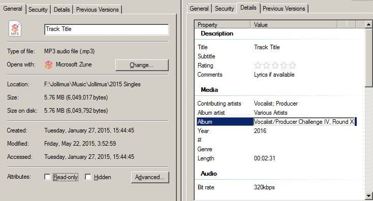

Rules and Regulations
1. Team Definition and Roles
- A team is comprised of one vocalist and one producer
- The team must remain the same members through the entirety of the competition
- The team must remain in the same roles through the entire competition
- The tracks must only feature members of that team unless otherwise stated.
- Each contestant is permitted entry with one team only.
- The producer is responsible for track production and final mixing
- The vocalist is responsible for lyrical content and delivery*1ab
- *1a the producer may “hype” (e.g. dubs, intros, shout outs) through the track
- *1b the producer may join the vocalist on the chorus
2. Specific Production Guidelines
- Production can be samples, live instrumentation, synths, digital constructions, or a cappella (e.g. beatboxing) or any combination thereof; unless otherwise stated in a round challenge
- No plagiarism*1
- Production, mixing, and mastering must be done by producer
- Production must meet requirements of round challenge to be eligible for voting/scoring
- Production of the track must be initiated after the announcement of that round begins*2ab
- *1Samples can be used but no straight beat theft
- *2aNo already released content will be accepted
- *2bNo already completed productions prior to round start will be accepted
3. Specific Vocalist Guidelines
- All lyrics must be written and performed by team vocalist unless otherwise stated in a round challenge*1
- Vocals/writing must meet requirements of round challenge to be eligible for voting/scoring
- No plagiarism of lyrics will be tolerated
- This is intended to be a full song-submission challenge, each submission must have at least 16 bars/one standard verse to be eligible for submission
- Lyrical content on the track must be created after the announcement of that round begins*2ab
- *1The producer may do hype vocals such as shout outs, intro skits, etc.
- *2aNo already released content will be accepted
- *2bNo already completed productions prior to round start will be accepted
4. General Track Submission Guidelines
- All tracks must be submitted by 11:59 PM PST the day the challenge round ends [insert submission method here / FTP or Email (?)]
- Tracks should be submitted in .mp3 format via [email]
- Tracks must meet a minimum verse length
- Tracks must be no shorter than 60 seconds as a total production
- No track shall be released to the public outside of the VPC approved outlets during the entirety of the competition or prior to the release of the first compilation album*1
- *1Sharing content linking back to the VPC postings of it on your own local social media is encouraged
Submission for each round should include:
- Team and/or Member Names
- Title of Track
- Lyrics
- Track attached
- ID3 Tags in agreed format (seen below).

General VPC IV Structure
- Each installment of the Vocalist/Producer Challenge shall last 5 rounds.
- Each round will be announced on a Friday at 09:00 PM EST
- Each round will have a 3-week work period ending the Saturday at 03:00AM EST / 11:59 PM PST
- Each round will be posted to the public by 03:00AM EST / 11:59 PM PST Sunday
- Each round will then have a 1 week voting period ending 11:59 PM PST the following Saturday from the deadline of submission
- All 5 rounds will be averaged to determine our final winners
- Following the finalization of the contest, a compilation album will be released for free to the public comprised of judge-selected “best of” tracks from the entirety of the competition
- This album will be a free release
- Producers will keep stems of each round to provide for final mastering as needed
- Each round will have a challenge for the producer AND a challenge for the vocalist
- Each round will be judged by four judges with crowd vote acting as a 5th judge.
- All judge scores (including the aggregated fan-vote scores) will be weighted equally and average to achieve the final score for a team on each round.
- Scoring will be on a scale of 1-10 (10 being the highest)
- All judge scoring is final
- Any violation(s) of any of the stated rules are disqualifiable offenses and will be handled at the discretion of the contest organizers.